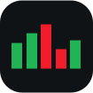

ट्रेडिंग
ट्रेडिंग का अर्थ इलेक्ट्रॉनिक ट्रेडिंग प्लेटफ़ॉर्म पर ब्रोकरेज कंपनी के माध्यम से मुद्राओं, क्रिप्टोकरेंसी, कंपनियों के शेयरों, सरकारी बॉन्ड और अन्य वित्तीय साधनों के सौदे करना है।
इन सौदों का उद्देश्य कीमतों में बदलाव से लाभ कमाना है।
ट्रेडर वह व्यक्ति है जो वित्तीय साधनों को खरीदने और बेचने के निर्णय स्वयं लेकर ये सौदे करता है।
कॉपी ट्रेडिंग से आप किसी ट्रेडर के सौदों को अपने ब्रोकरेज खाते में स्वचालित रूप से दोहरा सकते हैं, भले ही आपको ट्रेडिंग का अनुभव न हो।
सौदों की कॉपी से जुड़ने के बाद ब्रोकर का सिस्टम आपके खाते में सौदे अपने आप खोलता और बंद करता है। आपको स्वयं चार्ट का विश्लेषण करने, सही अवसर तलाशने या हर सौदे के बारे में निर्णय लेने की ज़रूरत नहीं होती।
आप 15 मिनट में जुड़ सकते हैं।